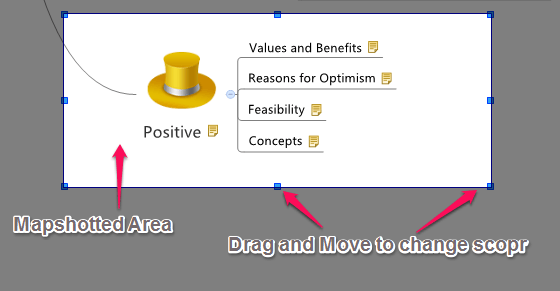
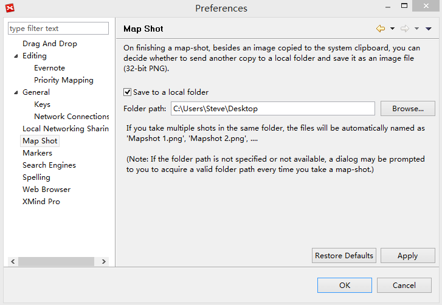

マップショット
マップショットは、XMind インストールしていない誰かと、マップの一部または全体を共有することができます。その方法：
マップショットの作成:
- マップを開きます。
- マップショットを作成するには2つの方法があります。
- 'F7 キー' を押します。
- メニューから[ツール]→[マップショット]を選択します。
- クリックし、マウスをドラッグして、領域を選択します。
- 選択した領域が強調表示されます。
- ドラッグするか、境界のスライダーを移動して、選択範囲を変更します。
- 選択した領域をダブルクリックすると、XMindは選択した領域を自動的にファイルを保存します。他のユーザーと共有したり、他のアプリケーションに貼り付けることができます。

注:
- 画像ファイルは PNG フォーマットで保存され、様々なツールで画像の表示や編集ができます。
- マップショットの設定を変更するには、メニューの[編集]→[設定]→[マップショット]を選択します。
